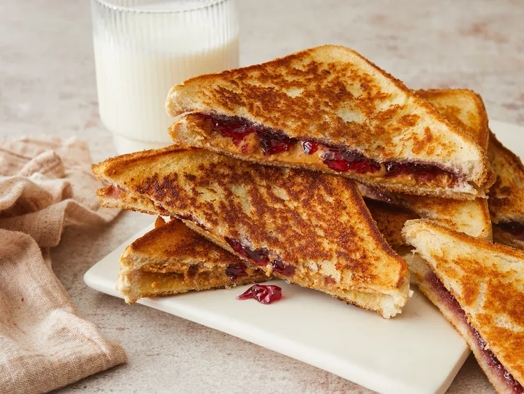

Grilled Peanutbutter & Jelly

Decription
Warm you heart by boosting the nostalgic treat
You can thank me later :)
Ingredients
- 2 teaspoons butter
- 2 slices white bread
- 2 teaspoons any flavor fruit jelly
- 1 teaspoon peanut butter
Directions
- Gather all ingredients.
- Heat a griddle or skillet to 350 degrees F (175 degrees C).
- Spread butter on one side of each slice of bread. Spread jelly on the unbuttered side of one slice of bread; spread peanut butter on the other unbuttered side.
- Place bread slices together, so peanut butter and jelly are in the middle.
- Cook on the preheated griddle until golden brown and heated through, about 4 minutes per side.